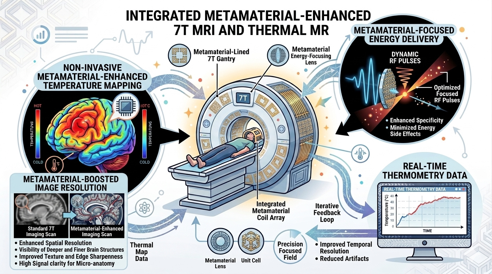

Berlin Ultrahigh Field Facility · Max Delbrück Center for Molecular Medicine
RF Scientist (Postdoctoral Researcher) · Ph.D., IIT Guwahati · Prime Minister's Research Fellow
I design and develop advanced metamaterial-based RF devices and coils that make MRI scanners see more — thin, wearable resonant structures that lift signal-to-noise, help shorten scans, and boost image quality.
About
I am a postdoctoral RF scientist at the Berlin Ultrahigh Field Facility (B.U.F.F.), Max Delbrück Center for Molecular Medicine, part of the Helmholtz Association, where I design radiofrequency coils and applicators for ultrahigh-field and thermal magnetic resonance in Prof. Thoralf Niendorf's group.
My doctorate at IIT Guwahati, held as a Prime Minister's Research Fellow and awarded the Institute's Best Ph.D. Thesis, asked a deliberately practical question: can a passive, low-cost structure placed on the patient recover image quality that would otherwise require a more expensive scanner? The answer became a body of work on metasurface wraps, high-Q spiral resonators and smart self-adaptive metamaterials for 1.5 T clinical MRI — validated not only in simulation but on real scanners, with hospital partners.
That work produced two granted Indian patents and a spin-out company. It has since carried into low-field imaging, at 50 mT for point-of-care MRI, and upward into 7 T and 9.4 T instrumentation. The thread throughout is the same: electromagnetics in service of an image a clinician can actually use.
I am currently preparing a Marie Skłodowska-Curie Postdoctoral Fellowship on reconfigurable metamaterial applicators for target-conformal thermal MR, and I am seeking a faculty position to build an independent RF, microwave and electromagnetics laboratory.
Ongoing work
At ultrahigh field the radiofrequency energy that forms an image can also be steered to deposit heat exactly where it is wanted. One device, two jobs.

My current work at B.U.F.F. develops reconfigurable metamaterial applicators for target-conformal thermal magnetic resonance. Subwavelength resonant structures placed between the antenna array and the patient reshape the transmit field, so that B1+ becomes more uniform and signal-to-noise rises where it matters.
The same control over the field serves a second purpose. By adjusting the amplitude and phase driving each element, RF energy can be concentrated on a tumour while surface hotspots are suppressed — the hard constraint in any thermal MR design, since scalp deposition typically exceeds the target by one to two orders of magnitude. The metamaterial layer exists to close that gap.
Clinical targets are extremity soft-tissue sarcoma and brain tumours, where localised heating is used alongside radiotherapy and chemotherapy. The goal is a single applicator that images, plans and treats without moving the patient.
Explore
Recent papers, patents, awards and talks.
Open → 02Metasurface add-ons for clinical MRI, RF coils across field strengths, thermal MR, and nanophotonics.
Open → 0314 journal articles and 21 conference papers, filterable by type, topic and authorship.
Open → 04Two granted Indian patents, a licensed technology, and Meta Samadhan Pvt. Ltd.
Open → 05NPTEL, Gauhati University, IIT Guwahati and NIT Delhi — plus building the MRI RF lab.
Open → 06Best Ph.D. Thesis, two IEEE Best Paper awards, the PMRF, and funded projects.
Open → 07Milestones, the lab, and life in Berlin.
Open → 08Email, office address, academic profiles and references.
Open →